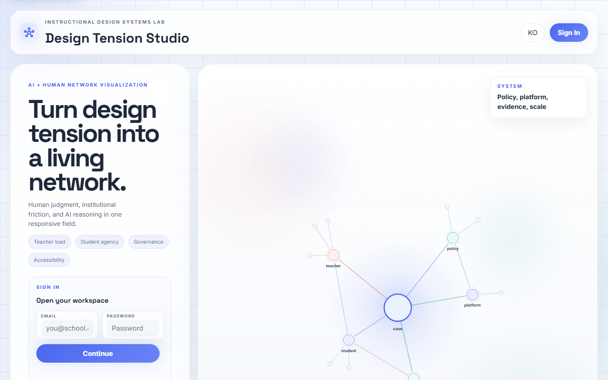
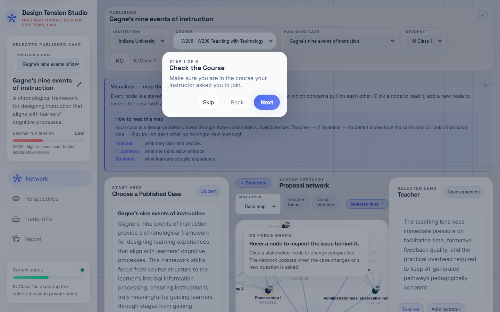
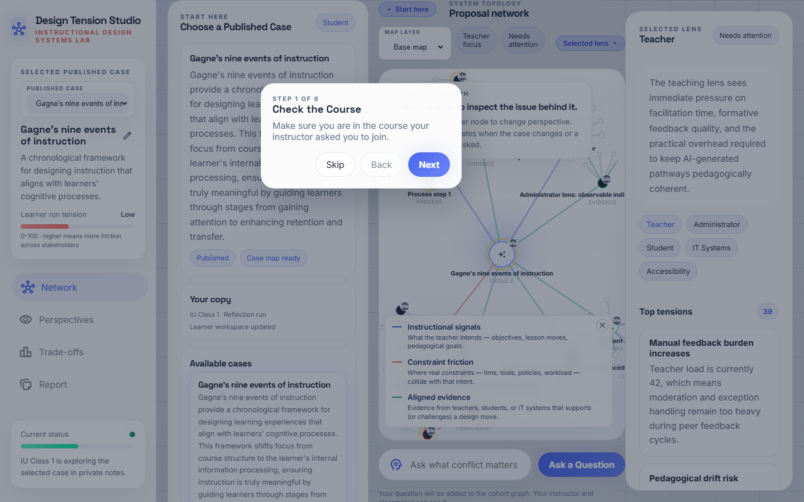
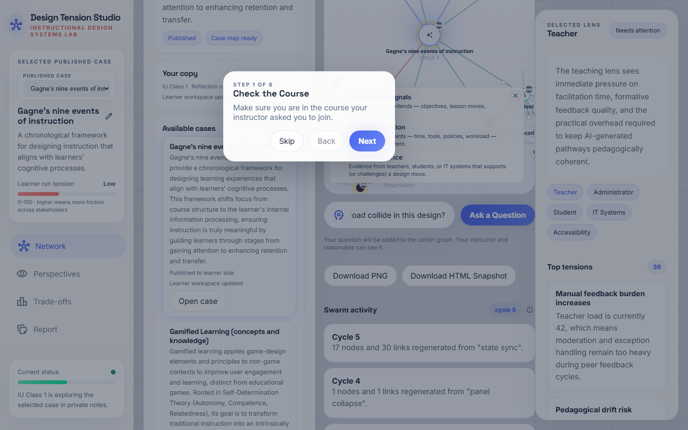
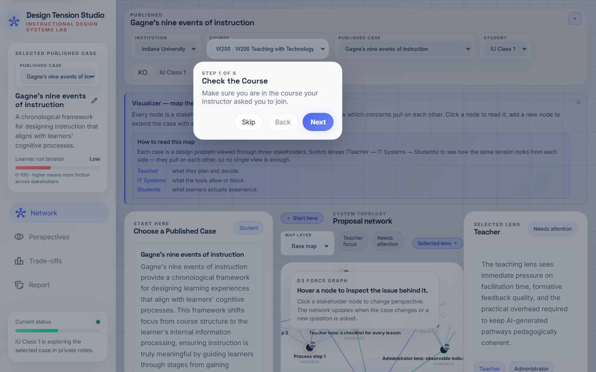
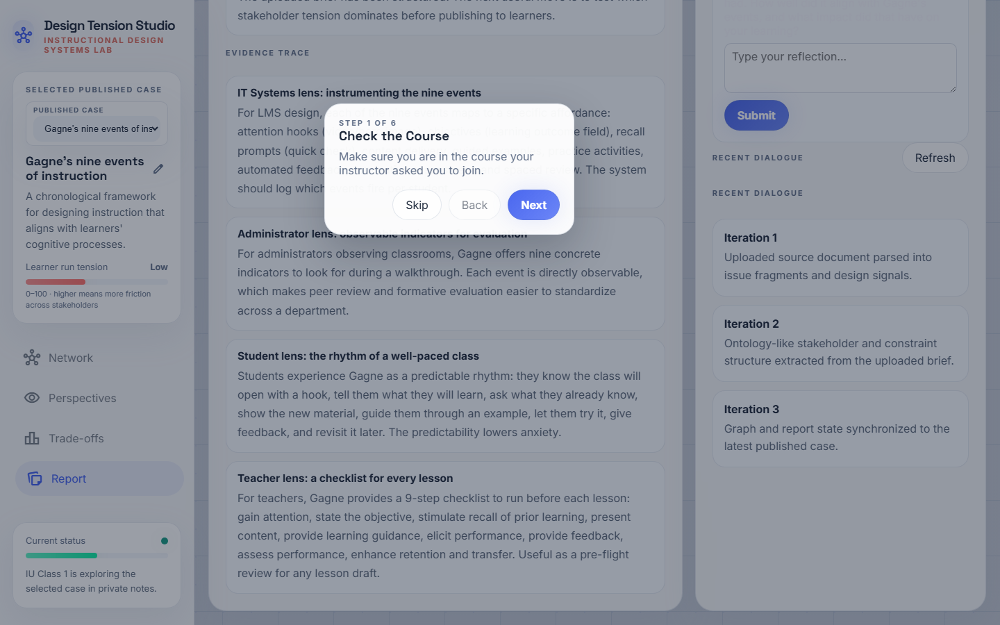

A step-by-step walkthrough for students using Swarm_ID during a class session. Each step shows what you will see, what to click, and what is happening inside the system — so you can understand the swarm, not just operate it.
What you are doing here. You are designing an online lesson.
Swarm_ID is your "second brain" — when you ask a question, **five
different stakeholders** (a teacher, a student, an IT specialist,
an administrator, an accessibility expert) answer **at the same
time. You then see where they agree, where they disagree**,
and decide what you want to do with the tension. Every node you
see carries a badge that tells you who wrote it:AI(one of the
agents),Me(you),Peer(a classmate), orBrief(the original
case).
Step 1 · Sign in

Go to https://swarmid.vercel.app and sign in with the account your instructor provided. If your instructor gave you a course or join code instead of an account, enter it on the landing screen.
What the system is doing: authenticating you through Supabase and loading your cohort context so you see the same course and cases as your classmates.
Step 2 · Onboarding card

First-time students see a "Welcome to Swarm_ID" card at the top of the Studio. It lists four quick moves:
- Pick a published case.
- Read the case brief and look at the map.
- Ask a question — the swarm answers from 5 lenses.
- Add your own agenda nodes and challenge the ones you disagree with.
Dismiss the card once you have read it — it will not come back for the same student account.
Step 3 · Pick a case

Scroll the Start here panel to find the Course cases list. Only cards tagged Published are available to students. Click Open case on the one your instructor pointed you to.
Tip. If the list is empty, the instructor has not published a case yet — let them know.
Step 4 · Case map

The canvas now shows the case as a network:
- A center core node with the case title.
- Five stakeholder nodes orbiting it (Teacher, Student, IT,
Administrator, Accessibility).
- Signal nodes (goals, constraints, evidence) connected to the
relevant stakeholder.
Read the case brief in the left panel first. Every node has a small provenance badge in its top-right corner — Brief means this content came from the original case document.
Step 5 · Ask your first question

At the bottom of the canvas is a composer input: "Ask a Question". Type something you genuinely want to think about — e.g.
*"How do student autonomy and teacher review load collide in this
design?"*
Hit enter. Do not hit it twice — one click launches a swarm round, which costs five Gemini calls in parallel.
What the system is doing: your question is sent to all five stakeholder agents simultaneously. Each agent answers from their own perspective — that is the swarm.
Step 6 · Swarm round — 5 answers

Within 5–8 seconds you see five new nodes added to the network — one per stakeholder — with AI provenance badges. In the Swarm activity sidebar the round counter increments by 1, and in the chat you see five messages, each labeled with a stakeholder name.
Read them side by side. The whole point of a swarm is that nobody's answer is "the" answer — they disagree, sometimes sharply.
Step 7 · Disagreement edges

A few seconds after the five answers arrive, a second pass classifies every pair as agree / disagree / tangential:
- Green solid line = agents agree.
- Red dashed line = agents disagree — *this is where learning
lives*.
- Gray dotted line = tangential (they are talking past each
other).
Click the ⓘ button next to the round counter to see the legend. Focus on red dashed lines. Those are the genuine design tensions you will have to resolve in your lesson plan.
Step 8 · Challenge one lens

In the chat, each swarm response has a small "Challenge this lens" button. Click it to push back — the system will prompt you for a challenge sentence (e.g. "That ignores our 40-minute class limit"), then it sends the original answer + your challenge back to that same agent. You get a round-2 refined response from that specific stakeholder.
Why this matters: this is where you stop being a passive reader of AI output and become a co-designer. Your challenge shapes the next answer.
Step 9 · Add your own agenda node

The Selected lens panel (right side) has an "Add to map" form. Give your node a short title, optionally a body. When you submit, the node appears on the canvas with a Me badge — that is how you show up in the shared cohort map.
Classroom rule of thumb: aim for at least 2–3 Me nodes per session. Those are your design decisions, not the AI's.
Step 10 · Report & personal reflection

Click Report in the left navigation. The report pulls together your decisions, the swarm rounds you ran, and the evidence attached. This is what you can hand in or paste into your lesson-plan draft.
Step 11 · Export / close out

Use Download PNG to save the current network as an image (good for slides), or Download HTML Snapshot to get a standalone offline copy of the map in its current state.
Sign out when you are done — your work is saved server-side via Supabase, so you can pick up where you left off next class.
Troubleshooting
| Symptom | Likely cause | Fix |
|---|---|---|
| Nothing happens after I hit "Ask" | Offline or Gemini quota exhausted | Check your wifi, then ask the instructor |
| Only my question appears, no 5 answers | Swarm round failed silently | Open browser console, look for runSwarmRound warnings |
| Red disagreement lines never show up | Second classifier pass failed | Reload the page and ask the question again |
| Challenge button does nothing | You closed the prompt dialog | Click the button again and actually type a challenge |
| I can't see the course case | The case is in Draft | Your instructor has to publish it |
How to get the most out of a session
- Write a real question. "What's hard?" is weak — "How does
teacher review time collide with student autonomy in my 40-min class?" is strong.
- Read all five answers before reacting. Do not collapse into
"the AI said..." — there is no single AI voice here; there are five.
- Challenge at least one lens. Turn-taking is where actual
learning happens.
- Add your own nodes. A map full of
AIbadges with noMe
badges means you have not taken a position yet.
- Export at the end. Your instructor can see activity, but the
report is easier to review than the raw map.